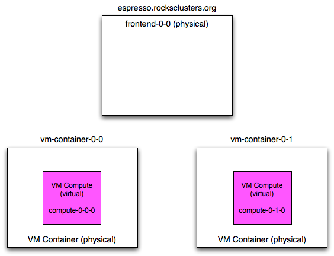

Xen Roll: Users Guide: 
| ||
|---|---|---|
| Prev | Chapter 3. Using the Xen Roll | Next |
In this scenario, the frontend is a physical machine (not a VM) and the compute nodes are virtual machines.

In the above picture, "frontend-0-0" is a physical machine (with the public name of "espresso.rocksclusters.org". The physical machine "frontend-0-0" controls two VM compute nodes named "compute-0-0-0" and "compute-0-1-0". This means that "compute-0-0-0" and "compute-0-1-0" are configured by "frontend-0-0". This is opposed to the "virtual cluster scenario" (Installing Virtual Clusters), where the virtual frontend ("frontend-0-0-0") configured the VM compute nodes, and the physical machine that housed "frontend-0-0-0" only started and stopped the virtual compute nodes.
In the common case, you will execute three Rocks commands over the lifetime of your VMs: add (to add VM info to the database), create (to install a newly added VM) and start (to boot an installed VM).
To add a VM to the system, you need to associate a VM with a physical machine (i.e., a VM container) and you need to assign an appliance type to the VM. Here's an example:
# rocks add host vm vm-container-0-0 membership="Compute" |
The above command will output a message similar to:
added VM compute-0-0-0 on physical node vm-container-0-0 |
This tells us that, in the database, the compute VM named "compute-0-0-0" has been assigned to the physical machine "vm-container-0-0".
The next step is to install the VM.
VMs are installed with the start command with the install=yes flag. Here's how to install the VM that was added above:
# rocks start host vm compute-0-0-0 install=yes |
The above command will start the standard Rocks installation process for the VM named "compute-0-0-0". After the installation process initializes the network inside the VM, you can monitor the installation just like a physical machine installation by executing:
# rocks-console compute-0-0-0 |
After the installation completes, the VM will reboot. After the VM boots, you can interact with the VM just like any other physical machine.